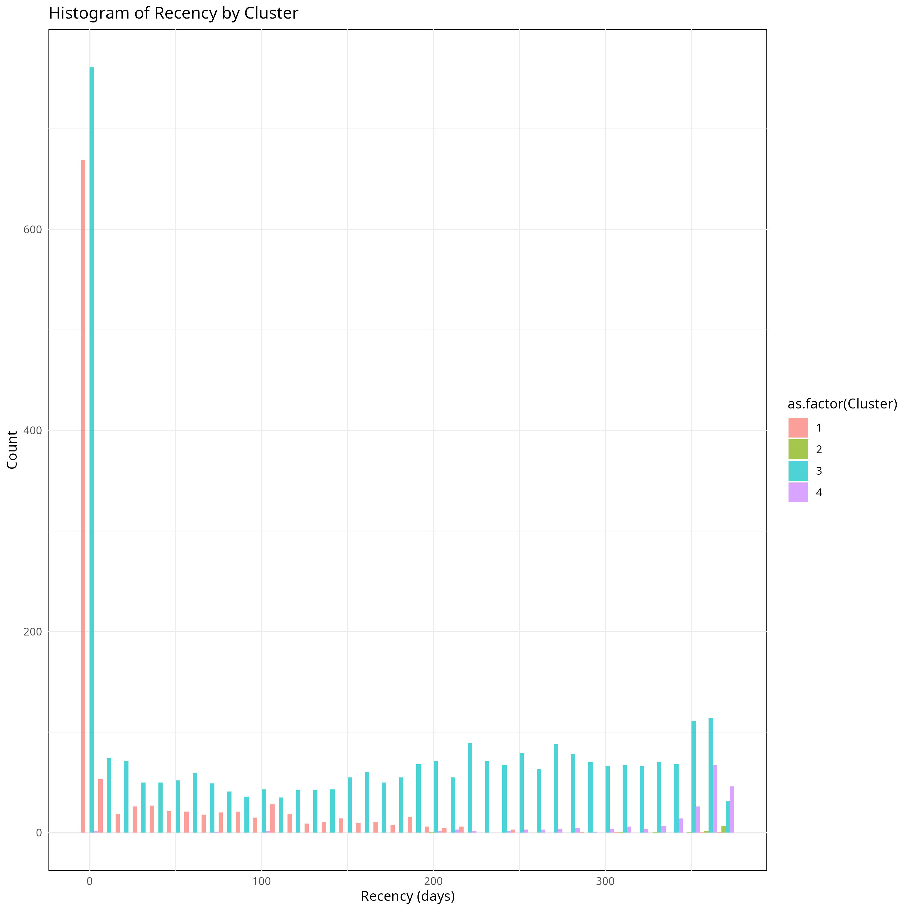
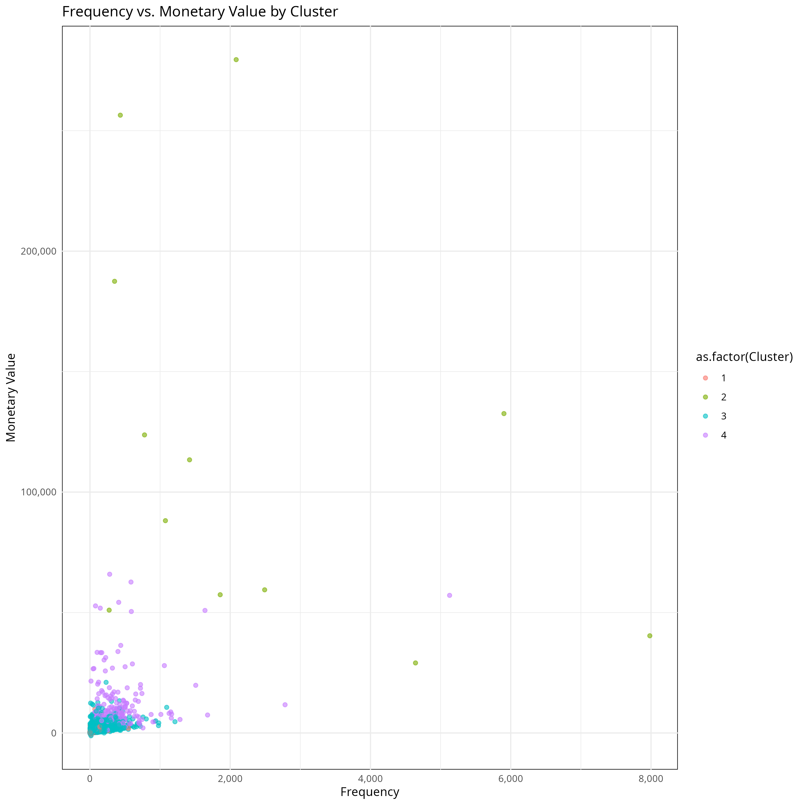

CustomerScope: RFM Analytics & Strategic Segmentation
View on GitHub
A comprehensive e-commerce customer segmentation analysis using RFM (Recency, Frequency, Monetary) metrics and advanced clustering techniques. This project analyzes customer purchasing behavior to identify distinct customer segments and provide actionable marketing insights.
Paper: E-commerce Customer Segmentation Analysis Using RFM and Advanced Clustering Techniques
Copyright © 2024 John ten Bosch Jr. All rights reserved.
Author: John ten Bosch Jr.
Affiliation: Business Analytics, San Francisco State University
Contact: gojack10@gmail.com
Abstract
This study presents a comprehensive analysis of customer segmentation in e-commerce using RFM (Recency, Frequency, Monetary) analysis and advanced clustering techniques. Using a dataset from the UCI Machine Learning Repository, we implemented K-means clustering to identify distinct customer segments and developed a systematic approach for customer behavior analysis. Our findings reveal four primary customer clusters with distinct characteristics, providing actionable insights for targeted marketing strategies and customer relationship management.
I. Introduction
In today's competitive e-commerce landscape, understanding customer behavior and effectively segmenting customers has become crucial for business success. Customer segmentation in e-commerce involves dividing the customer base into distinct groups based on shared characteristics such as purchasing behavior, demographics, browsing patterns, and lifetime value. This segmentation enables businesses to:
- Tailor marketing strategies to specific customer groups
- Optimize product recommendations
- Customize user experiences based on segment characteristics
- Improve conversion rates and customer retention
- Enhance average order value through personalized approaches
The importance of data-driven decision-making in this context cannot be overstated, as it allows businesses to move beyond intuition-based strategies to measurable, empirical approaches.
II. Methodology
A. Data Preparation
The study utilized the online retail dataset from the UCI Machine Learning Repository. The data preparation process involved several key steps:
- Data Cleaning:
- Removal of missing values
- Elimination of negative quantities and prices
- Conversion of invoice dates to proper datetime format
- Filtering of invalid customer IDs
- Feature Engineering:
- Implementation of RFM metrics:
- Recency: Days since last purchase
- Frequency: Number of distinct purchases
- Monetary: Total amount spent
- Scaling of RFM values for clustering accuracy
- Implementation of RFM metrics:
The RFM features are calculated using the following approach:
rfm_data <- clean_retail_data %>%
group_by(CustomerID) %>%
summarise(
# Recency: days since last purchase
Recency = as.numeric(difftime(max_date, max(InvoiceDate), units = "days")),
# Frequency: number of purchases
Frequency = n_distinct(InvoiceNo),
# Monetary: total money spent
Monetary = sum(Quantity * UnitPrice)
) %>%
# Remove any rows where CustomerID is NA
filter(!is.na(CustomerID))Mathematically, this can be expressed as:
\[R_i = max(Date) - max(Date_i)\] \[F_i = |distinct(InvoiceNo_i)|\] \[M_i = \sum_{j=1}^{n_i} (Quantity_{ij} \cdot UnitPrice_{ij})\]
Where:
- \(R_i\) is the recency for customer \(i\)
- \(F_i\) is the frequency for customer \(i\)
- \(M_i\) is the monetary value for customer \(i\)
- \(n_i\) is the number of transactions for customer \(i\)
B. Clustering Algorithms and Initial Analysis

The initial analysis of RFM metrics revealed distinct patterns in customer behavior:
- Frequency Distribution:
- Highly left-skewed distribution
- Majority of customers with low purchase frequency (<50 purchases)
- Small subset of highly frequent purchasers
- Monetary Distribution:
- Extreme left-skew with long tail
- Most customers in lower spending brackets
- Few high-value outliers representing major revenue contributors
- Recency Distribution:
- More uniform distribution compared to other metrics
- Gradual decline in customer counts with increasing recency
- Notable long tail indicating potential churn risks
The k-means clustering algorithm minimizes the following objective function:
\[J = \sum_{i=1}^{n} \sum_{j=1}^{k} w_{ij} ||x_i - \mu_j||^2\]
Where:
- \(J\) is the objective function to minimize
- \(n\) is the number of data points
- \(k\) is the number of clusters
- \(w_{ij}\) is 1 if point \(i\) belongs to cluster \(j\), 0 otherwise
- \(x_i\) is the feature vector for point \(i\)
- \(µ_j\) is the centroid of cluster \(j\)
# k-means clustering with optimal k
optimal_k <- 4
final_clusters <- kmeans(rfm_scaled, centers = optimal_k, nstart = 25)
rfm_clustered <- rfm_data %>%
mutate(Cluster = factor(final_clusters$cluster))The optimal number of clusters was determined through two complementary methods:

- Silhouette Analysis:
- Highest score at k=2 (0.89)
- Notable drop after k=4 (0.62)
- Diminishing returns beyond k=4
- Supports selection of 4 clusters for balance between granularity and cohesion

- Elbow Method:
- Sharp decline in within-cluster sum of squares until k=4
- Flattening of curve after k=4
- Confirms optimal cluster count of 4
- Additional clusters provide minimal reduction in variance
III. Results Analysis
A. Segment Profiling

The analysis revealed four distinct clusters with unique characteristics:
- Cluster 3 (Potential Loyalists):
- Size: 3,060 customers (70.54%)
- Average Recency: 43.43 days
- Average Frequency: 3.68 purchases
- Average Monetary Value: $1,358.17
- Moderate RFM scores (R: 3.51, F: 3.22, M: 3.20)
- Cluster 1 (Average Customers):
- Size: 1,061 customers (24.46%)
- Average Recency: 248.17 days
- Average Frequency: 1.55 purchases
- Average Monetary Value: $478.19
- Lower RFM scores (R: 1.19, F: 1.98, M: 2.01)
- Cluster 4 (Champions):
- Size: 204 customers (4.70%)
- Average Recency: 14.96 days
- Average Frequency: 22.33 purchases
- Average Monetary Value: $12,709.09
- High RFM scores (R: 4.62, F: 4.96, M: 4.99)
- Cluster 2 (VIP Customers):
- Size: 13 customers (0.30%)
- Average Recency: 6.62 days
- Average Frequency: 82.54 purchases
- Average Monetary Value: $127,338.31
- Highest RFM scores (R: 4.77, F: 4.85, M: 5.00)
B. Detailed Value Distribution Analysis

The monetary value distribution across clusters reveals distinct spending patterns:
- VIP Customers (Cluster 2):
- Highest median monetary value (~85,000)
- Substantial interquartile range (45,000-130,000)
- Notable outliers exceeding 200,000
- Clear separation from other clusters
- Champions (Cluster 4):
- Moderate monetary values (median ~15,000)
- Compact distribution with some high-value outliers
- Consistent spending patterns
- Average & Potential Loyalists (Clusters 1 & 3):
- Similar monetary distributions
- Lower median values (<5,000)
- Minimal variance in spending
- Occasional outliers indicating growth potential
Recency Patterns
The recency distribution highlights engagement patterns:
- Recent Engagement:
- Clusters 1 & 3 show high concentration in 0-50 day range
- Clear peak in very recent activity (<30 days)
- Strong active customer base
- Temporal Distribution:
- Cluster 3 shows even distribution across time periods
- Cluster 1 concentrated in recent periods
- Long tail extending to 350+ days
- Natural segmentation points at 100 and 200 days
Value-Frequency Relationship
The relationship between purchase frequency and monetary value reveals:
- Cluster Characteristics:
- Cluster 2: High frequency and high value, clear outliers
- Cluster 4: Moderate frequency, consistent value
- Cluster 3: Low to moderate frequency, variable value
- Cluster 1: Low frequency, low value concentration
C. Churn Risk Analysis

The study implemented a comprehensive churn risk assessment framework that revealed distinct patterns:
For the churn risk analysis, we calculate an engagement score:
Engagement_Score = (
scale(Frequency) +
scale(Monetary) +
scale(-Recency)
) / 3Mathematically represented as:
\[E_i = \frac{Z(F_i) + Z(M_i) - Z(R_i)}{3}\]
Where:
- \(E_i\) is the engagement score for customer \(i\)
- \(Z()\) is the standardization function
- \(F_i\), \(M_i\), and \(R_i\) are the frequency, monetary, and recency values respectively
- Active Customers:
- Maintain consistently low churn probability (<20%)
- Show regular engagement patterns
- Demonstrate stable purchasing behavior
- High-Risk Segment:
- Display nearly 100% churn probability
- Typically inactive for >150 days and have low or no purchases
- Sharp transition point around 150-day mark
- Clear separation from active customer base
Further analysis of transaction patterns reveals clear clustering of high-risk customers in the low-frequency zone, while active customers show varied transaction frequencies with clear stratification between risk levels.
D. Time Series Analysis and Forecasting

The Prophet forecasting model revealed several key insights:
For the time series forecasting, we use Prophet's additive model:
\[y(t) = g(t) + s(t) + h(t) + \epsilon_t\]
Where:
- \(g(t)\) is the trend function
- \(s(t)\) is the seasonal component
- \(h(t)\) is the holiday component
- \(\epsilon_t\) is the error term
prophet_model <- prophet(
monthly_sales_clean,
growth = 'linear',
yearly.seasonality = FALSE,
weekly.seasonality = FALSE,
daily.seasonality = FALSE,
seasonality.mode = 'additive',
changepoint.prior.scale = 0.01,
n.changepoints = 2
)- Historical Trend Analysis:
- Significant volatility in actual sales from January 2011 to July 2011
- Notable dip in sales during April 2011
- Strong upward trajectory beginning in October 2011
- Overall increasing trend despite monthly fluctuations
- Forecast Trend:
- Linear growth projection extending into early 2012
- Baseline trend showing steady increase from approximately 400,000 to over 1,000,000 in sales
- Conservative growth estimate compared to recent historical spikes
- Reduced sensitivity to short-term fluctuations
IV. Business Implications and Strategic Recommendations
Based on the comprehensive analysis, we recommend the following segment-specific strategies:
- VIP Customers (Cluster 2):
- VIP program development
- Early access to new products
- Personalized service offerings
- High-touch relationship management
- Champions (Cluster 4):
- Upgrade path to elite status
- Loyalty rewards optimization
- Cross-selling campaigns
- Engagement maintenance programs
- Potential Loyalists (Cluster 3):
- Frequency boost initiatives
- Value-added services
- Category expansion
- Targeted promotional campaigns
- Average Customers (Cluster 1):
- Activation campaigns
- Entry-level loyalty programs
- Educational content
- Basic engagement initiatives
V. Implementation Framework
The study developed a comprehensive dashboard solution for practical application:
- Dashboard Components:
- Overview metrics
- Cluster analysis
- Time series analysis
- Churn risk assessment
- Customer details
- Technical Features:
- Interactive filtering
- Real-time visualization
- Responsive design
- Modular architecture
VI. Conclusion
This study demonstrates the effectiveness of RFM-based clustering for e-commerce customer segmentation. The identified segments provide a clear framework for targeted marketing strategies and customer relationship management. The analysis reveals clear distinctions between customer segments and provides actionable insights for business strategy.
Practical Applications
- Improved customer targeting
- Enhanced resource allocation
- More effective retention strategies
- Personalized marketing campaigns
Future Research Recommendations
- Integration of additional behavioral metrics
- Longitudinal analysis of segment stability
- Investigation of cross-channel behavior patterns
- Development of predictive models for segment transitions
References
Chen, D. (2015). Online Retail Data Set. UCI Machine Learning Repository. https://archive.ics.uci.edu/dataset/352/online+retail. https://doi.org/10.24432/C5BW33